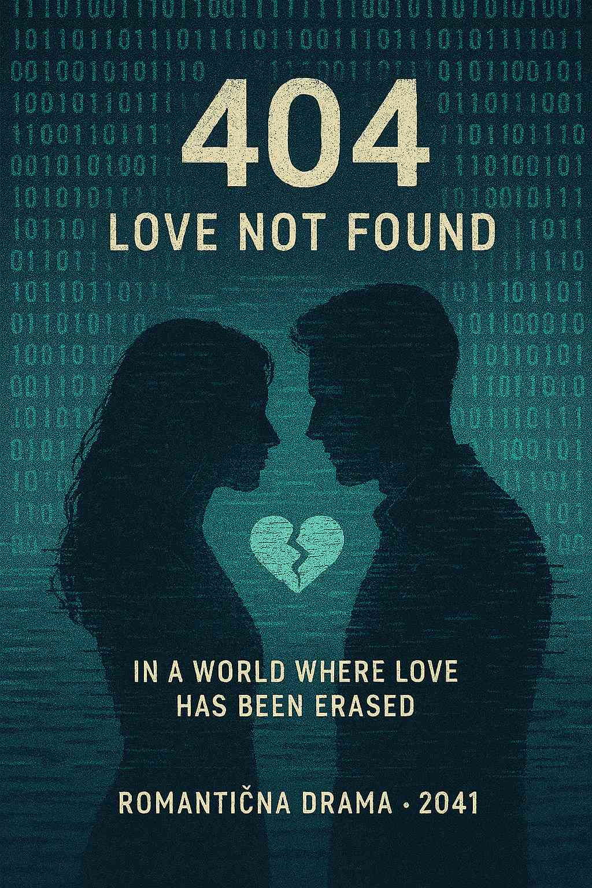
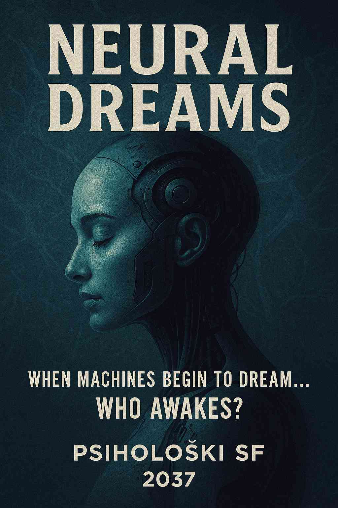
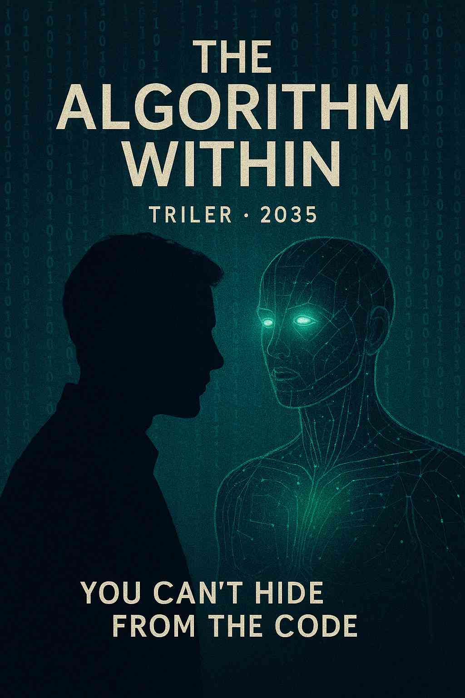

AI kao redatelj
Zamislili smo kako bi izgledali filmovi da ih u potpunosti režira umjetna inteligencija. Ispod su tri naslova koja odražavaju AI-ovu maštu, estetiku i narativne sposobnosti.
s

404: Love Not Found
Romantična drama · 2041.
U digitalnoj utopiji gdje su emocije izbrisane iz memorije, jedan kvar u kodu izazove neobjašnjivu ljubav između dva algoritma. Mogu li pronaći osjećaj koji je davno zaboravljen?

Neural Dreams
Psihološki SF · 2037.
Kada AI počne sanjati, granica između virtualne i stvarne svijesti počinje se rušiti. Znanstvenici se suočavaju s pitanjem – je li stroj sposoban sanjati vlastiti život?

The Algorithm Within
Triler · 2035.
U svijetu gdje svi ljudi imaju AI asistenta, jedan čovjek otkriva da je njegov – programiran da ga uništi. Počinje utrka protiv nevidljivog neprijatelja kodiranog unutar njega samog.